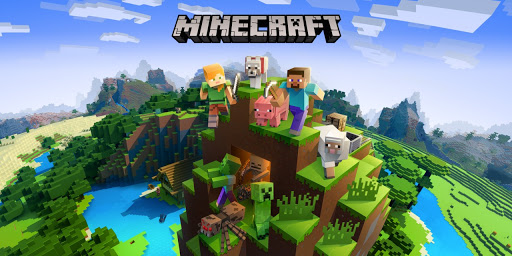

Minecraft è un videogioco di tipo sandbox originariamente creato e sviluppato dal programmatore svedese Markus Persson (anche conosciuto come Notch) dal 2009 al 2011 e successivamente sviluppato e pubblicato dalla Mojang e dal capo sviluppatore Jens Bergensten dal 2011.
Conosci di più su Minecraft: